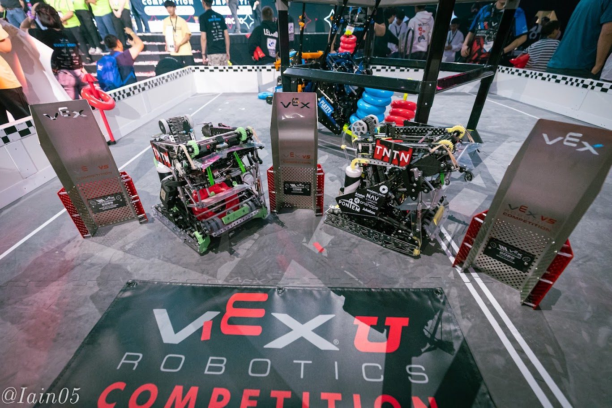

CompetitionVEX U World Championship
I'm the mechanical lead of Ten Ton Robotics, a university VEX U team. We won the 2025 World Championship and back-to-back Skills World Championships against 300+ university teams.
I led the mechanical design of both of our robots for the 2025 season, from the first CAD sketches all the way to Worlds. We won the Tournament, the Skills Challenge and the Excellence Award, and it was our second Skills world title in a row.
We're a 14-person team. Parts are CNC machined or 3D printed, and I run FEA in Ansys on anything that has to carry real load.